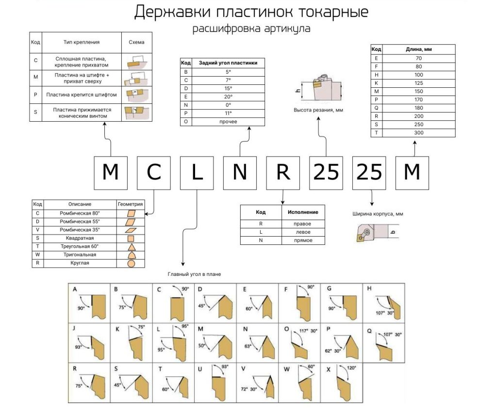
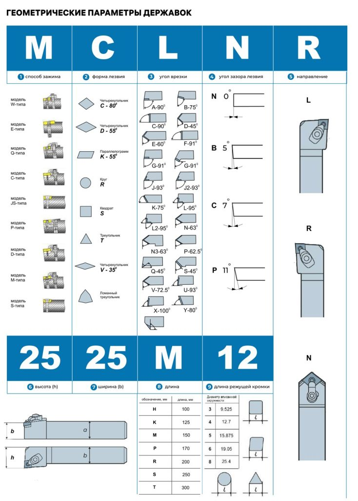

Расшифровка артикула токарной державки MCLNR2525M — что означают буквы и цифры? Как подобрать пластины к державке на Ozon? Понятное объяснение с таблицами и схемами. Узнайте, как не ошибиться при покупке.
Вы когда-нибудь сталкивались с ситуацией:
«Купил державку MCLNR2525M на Ozon — а какие пластины к ней подходят?»
Или:
«В артикуле написано MCLNR2525M — что это за херня? Где найти аналоги?»
Это не редкость. Это ежедневная боль для любого токаря, который работает с китайским или «серым» инструментом.
В этой статье мы разберем артикул MCLNR2525M по буквам и цифрам, посмотрим что означает каждый символ, и поймем, как подобрать пластины — быстро, без ошибок, без переплат.

🔢 Расшифровка артикула MCLNR 2525M
Артикул токарной державки состоит из букв и цифр, каждая из которых обозначает конкретную характеристику.
Возьмём пример: MCLNR 2525M
1. Первая буква — M
Это тип крепления пластины.
| Код | Описание |
|---|---|
| C | Сплошная пластина, крепление прихватом |
| M | Пластина на штифте + прихват сверху |
| P | Пластина крепится штифтом |
| S | Пластина прижимается коническим винтом |
→ M — значит, пластина крепится на штифте и прихватом сверху. Это один из самых распространённых типов.
2. Вторая буква — C
Это геометрия пластины — угол режущей кромки.
| Код | Описание | Угол |
|---|---|---|
| C | Ромбическая 80° | 80° |
| D | Ромбическая 55° | 55° |
| V | Ромбическая 35° | 35° |
| S | Квадратная | 90° |
| T | Треугольная 60° | 60° |
| W | Тригональная | — |
| R | Круглая | — |
→ C — значит, пластина ромбическая, угол 80°. Подходит для черновой и получистовой обработки.
3. Третья буква — L
Это главный угол в плане — угол между режущей кромкой и осью державки.
| Код | Угол |
|---|---|
| A | 90° |
| B | 75° |
| C | 90° |
| D | 45° |
| E | 60° |
| F | 90° |
| G | 90° |
| H | 107° 30′ |
| J | 93° |
| K | 75° |
| L | 95° |
| M | 50° |
| N | 63° |
| O | 117° 30′ |
| P | 62° 30′ |
| Q | 107° 30′ |
| R | 75° |
| S | 45° |
| T | 60° |
| U | 93° |
| V | 72° 30′ |
| W | 60° |
| X | 120° |
→ L — значит, главный угол 95°. Это стандартный угол для большинства операций.
4. Четвертая буква — N
Это задний угол пластины — угол заточки.
| Код | Угол |
|---|---|
| B | 5° |
| C | 7° |
| D | 15° |
| E | 20° |
| N | 0° |
| P | 11° |
| O | прочее |
→ N — Значит задний угол пластинки 0°
5. Пятая буква — R
Это исполнение державки — направление подачи.
| Код | Исполнение |
|---|---|
| R | правое |
| L | левое |
| N | работает в обе стороны |
→ R — значит, державка правая. Подходит для работы с правой подачей.
6. Первые две цифры — 25
Это высота державки, мм.
→ 25 мм — высота, на которой находится режущая кромка пластины над основанием державки и высота державки.
7. Вторые две цифры — 25
Это ширина державки, мм.
→ 25 мм — ширина самого корпуса державки. Определяет, на какой станок она подойдёт.
8. Последняя буква — M
Это длина державки.
| Код | Длина, мм |
|---|---|
| E | 70 |
| F | 80 |
| H | 100 |
| K | 125 |
| M | 150 |
| P | 170 |
| Q | 180 |
| R | 200 |
| S | 250 |
| T | 300 |
→ M — значит, длина державки 150 мм. Подходит для средних и крупных деталей.
✅ Как подобрать пластины к державке MCLNR 2525M?
Теперь, когда вы знаете, что означает каждый символ, можно подобрать пластины.
Для державки MCLNR2525M подойдут пластины с:
- Типом крепления:
M(на штифте + прихват), - Геометрией:
C(ромбическая 80°), - Углом в плане:
L(95°), - Задним углом:
N(0°) - Размером:
25x25 мм.
Примеры подходящих пластин:
- CCMT160608 (в качестве примера),
- LF9218 (китайский аналог ВК8),
- UE6020 (более хрупкий, для чистовой обработки).
💡 Совет: Если вы покупаете пластины на Ozon — ищите по маркировке CCMT160608. Они совместимы с державкой MCLNR 2525M.
❗ Почему важно знать расшифровку?
Потому что:
- Не все пластины подходят — даже если они «похожи».
- Ошибка = брак, сломанный резец, потеря времени.
- На Ozon часто продают «аналоги» без указания точной маркировки — и вы можете купить то, что не подойдёт.
🛠️ Где найти полную расшифровку для других державок и пластин?
Если вам нужно подобрать пластинки к другой державке или понять маркировку сплава CNC пластинки — например, SDJCR2525M или UE6020 — воспользуйтесь нашим каталогом китайских маркировок.
В каталоге:
- Поиск по артикулу → получаете полную расшифровку,
- Подбор совместимых пластин с фото и ценой на Ozon,
- Описание твердого сплава пластинки и его аналоги ГОСТ и ISO,
- Рекомендации по режимам резания.
→ Перейти в каталог Расшифровка китайских маркировок CNC инструмента
📌 Заключение
Расшифровка артикула токарной державки — это не «нудная теория», а практический навык, который спасёт вас от ошибок при покупке инструмента.
Запомните:
MCLNR 2525M =
- M — крепление на штифте,
- C — ромбическая пластина 80°,
- L — угол в плане 95°,
- N — задний угол пластинки,
- R — правая державка,
- 25 — высота державки,
- 25 — ширина державки,
- M — длина державки 150 мм.
Используйте эту информацию — и вы никогда не купите «не ту» державку или пластину.
